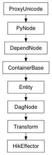

Returns an array of the auxiliary effectors associated with this effector. Auxiliary effectors are used by humanIK to act as additional pivots.
| Return type: | PyNode list |
|---|
Derived from api method maya.OpenMayaAnim.MFnHikEffector.getAuxiliaryEffectors
Retrieve the cached humanIK color of this effector.
| Return type: | Color |
|---|
Derived from api method maya.OpenMayaAnim.MFnHikEffector.getEffColor
Retrieve the pivot offset of this effector.
| Return type: | Vector |
|---|
Derived from api method maya.OpenMayaAnim.MFnHikEffector.getPivotOffset
Set the humanIK color for this effector.
| Parameters: |
|
|---|
Derived from api method maya.OpenMayaAnim.MFnHikEffector.setEffColor
Set the pivot offset for this effector.
| Parameters: |
|
|---|
Derived from api method maya.OpenMayaAnim.MFnHikEffector.setPivotOffset